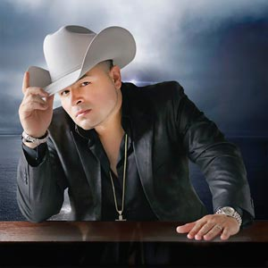
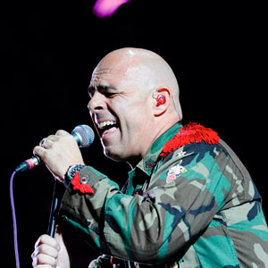

Directorio de Artistas
Alan Ramírez
{kind=link}
Astra
 |
Astra artista de género urbano que ha consolidado su carrera con grandes éxitos en el país, en esta oportunidad nos presenta su más reciente sencillo “Amiga duda”, un tema en donde muestra su habilidad en cuanto a la melodía y el rap, esta bogotana siempre ha sorprendido a sus seguidores por incursionar en varios estilos urbanos como lo ha hecho con la cumbia, champeta y ahora con esta balada urbana. |
Ballestyc
{kind=link}
Camila Lomán
 |
Camila Lomán, artista revelación de la música popular nacida en la ciudad de Cali, nos presenta su más reciente éxito “De rodillas” con un nuevo formato y ritmo presentando una nueva faceta para la música popular y su carrera, tema que promete mucho a sus fans y seguidores.. |
D-Lord
{kind=link}
Daniel Medicis
{kind=link}
Danny Moreno
 |
Danny Moreno & La 13, viene robándose los corazones de sus seguidores con su nuevo éxito musical titulado “Ladrón malvado” con el cual ha contagiado a todo el mundo de una nueva y única forma de hacer música. Con su original timbre de voz canta esta bella historia de amor de su propia autoría bajo la dirección y producción de su hermano y acordeonero Jorge Moreno. Contacto:Teléfono: 311 2464351 – 321 2704325 Instagram: @DannyMorenoYLa13 Facebook: Danny Moreno YouTube: Danny Moreno & La 13 |
Yiyo Bohórquez
{kind=link}
Elkin Hurtado
{kind=link}
Espinoza Paz
 |
Espinoza Paz prepara una gira de presentaciones para poder estar muy cerca de todos sus seguidores en Colombia mientras recorre diferentes ciudades de México, Estados Unidos y Guatemala promocionando su nuevo material. |
Fernando Gil
 |
“El caballero de la música popular“. Tras los éxitos como "A mi manera", "Incondicional" y "Perdí", Fernando Gil decidió relanzar el sencillo "Como dices tú", un tema que se ha mantenido en los primeros lugares en Colombia y México desde su lanzamiento en 2015 y que produjo de la mano de Kike Santander. Contacto: |
Fernel Guerra
 |
Fernel Guerra, artista revelación de la música vallenata, después de su éxito “Propuesta indecente”, nos presenta su más reciente éxito “Muero sin ti”, de su propia inspiración, con la que ganó varios reconocimientos en la hermana República de Venezuela. |
Jhoan Ospina
 |
Jhoan Ospina, artista revelación de la música popular nacido en Pacho, nos presenta su más reciente éxito “Maldito corazón”, con un nuevo formato y ritmo presentando una nueva faceta para el género y su carrera. |
Juan Carlos Ensamble
 |
Juan Carlos Ensamble, el artista chocoano puso a bailar a toda Colombia con su nuevo sencillo “Tú y yo”, tema que hace parte de su nueva producción discográfica de este artista que sigue consolidando su carrera como solista. Contacto: |
Juan Palau
{kind=link}
Julián López
{kind=link}
KandyMaku
 |
El cantante arahuaco, KandyMaku, presenta hoy las canciones "Zamaya" y "Enamorado de ti", como anticipos musicales de su álbum titulado “Guardián”, que lanzará en el preámbulo del Festival Vallenato. |
Lady Noriega
{kind=link}
Los P–Tres
{kind=link}
Mateo De Dios
 |
Con menos de 1 año de carrera artística, Mateo De Dios, artista revelación de la música popular, presenta su más reciente sencillo “Doble cara“ , que es una fusión colombomexicana y trata de la traición de una mujer que tiene una doble vida y que es descubierta por su pareja, esta canción forma parte de su primera producción discografía que es titulada “Pa qué más”. Contacto: |
Mauricio Ceballos
{kind=link}
Miguel Galindo
|  | El artista mexicano Miguel Galindo, presenta su más reciente éxito “Ya no me preguntes”, tema con el que llegó a conquistar a todos los colombianos. Contacto: |
{kind=link}
Orlando López
 |
“Sufre corazón”, es el nuevo sencillo de
Orlando López, con el que logró salirse de lo común y mostró en su video una historia diferente. “Sufre corazón”, se está consolidando como un éxito nacional y está punteando los rankings de los medios de comunicación como uno de los mejores del 2018. |
Roberto Antonio
 |
Roberto Antonio, cantante y compositor venezolano, co-fundador y precursor del tecnomerengue, está de regreso al mercado discográfico para celebrar tres décadas de impecable trayectoria musical. Desde sus enormes hits de los 80′, incluyendo “Noches de fantasía” y “Marejada” ha hecho girar el globo entero con sus éxitos, hasta su actual sencillo “Me enamoré”, producido por el ganador de Grammy Latino Rodolfo Castillo. Contacto: |
Shantana
{kind=link}
Stokoff
|  | Stokoff “El rey del country pop en español” después de lograr los primeros lugares en los listados radiales de Colombia y la Costa Este de los Estados Unidos con el lanzamiento de su nueva canción “Si tu no estás”, presenta su video clip, una producción única pues es la primera vez que un artista graba una pieza musical con Iphone X. Contacto: |
{kind=link}
{kind=link}
{kind=link}